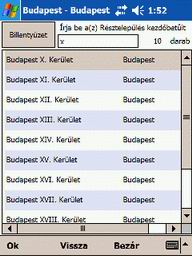

3.
A program kezelése
3.1. A Fõmenü
A „Fõmenü”-ben a program legtöbbször
használt funkcióit érheti el. Navigációt indíthat, elõre megtervezheti útvonalát,
térképeken kereshet, valamint a rendszer változóinak beállításait végezheti
el, a megfelelõ ikonra kattintva.
A program "Profi" verziójának
felhasználói a "UtIfo" elindításakkor az alábbi
képernyõt láthatják.
A program "Mediumi"
verziójának felhasználói a "UtIfo" elindításakkor
ugyan ezen ikonokat, kék alapszínnel láthatják.
3.1.1. Navigátor
A
"Navigátor" gombra kattintva, a program mindíg
az aktuális pozíciójától (GPS pozíció), cím, térképi pont, saját POI alapján
megadott célpont(ok)ig, megtervezi útvonalát.
A
"Navigátor" csak akkor használható, ha mûködõ GPS
vevõ készülék csatlakozik a PDA-jához (Bluetooth-os vevõ esetén figyeljen
oda, hogy a Bluetooth kommunikáció be legyen kapcsolva a PDA-n)!
A
funkció elindítása elött célszerû a rendszer változóinak a beállítás a "Fõmenü/Beállítások/GPS
beállítások", "Fõmenü/Beállítások/Navigátor
beállítások", "Fõmenü/Beállítások/Tervezõ
beállítások" ablakokban. A Navigátor és a Tervezõ beállítások
esetén használhatja az alap beállításokat, de a GPS vevõ beállításait végezze
el. Ha mégse állította be a GPS vevõt, a program a navigáció indulásakor megpróbálja
automatikusan megkeresni azt.
A funkciót elérheti a térképi ablak felsõ részén megjelenõ
"Térképkezelõ eszköztár/Navigátor",
"Navigáció
menü/Navigátor" ikonjára kattintva, vagy a "PDA
Navigáló gomb" -jának közepét megnyomva.
A "Navigátor" funkció leállítása
az elöbb leírt ikonok (gombok) újbóli megnyomásával érhetõ el, vagy ha elérte
úticélját a program automatikusan leállítja a navigációt és visszaugrik a
"Fõmenübe".
A "PDA
navigáló gomb" -jával továbbá kicsinyíthet, nagyít, és térképet válthat
Magyarország és települések között.
Menet
közben a rendszer hangbemondás alapján tájékoztatja Önt a különbözõ elvégzendõ
manõverekrõk (kanyarodás stb.).
Figyelem! Az 1.8.5. verzió jelenleg csak Budapesten rendelkezik közlekedési
szabályok adatbázissal, ezért a többi településen fokozottan figyeljen a KRESZ
szabályaira!
A
rendszer navigációs manõverként csak a keresztezõdésekben történõ elfordulást
jelzi. Az utak elfordulását, miután ez rendkívül sok (esetenként zavaró pl. hegyi szerpentinek) manõvert jelentene, nem jelzi.
Két
település közötti átmenõ településen, a keresztezõdéseket csak akkor érzékeli,
ha azok országos szintû utak keresztezõdése.
A
program hangos navigációra is képes. A vezérlõ hang csak azokat a navigációs
manõvereket mondja be, amiket a „Nav./GPS
adatok” ablakban megjelennek.
A
rendszerben lehetõség van a vezérlõhang karakterének megváltoztatására, négy
féle hang mintából.
A hangkarakterek megváltoztatása:
- Indítsa el a PDA-n a „File explorer”-t (Intézõ).
- Tallózza fel a My Device (Sajátgép)/SD CARD/ÚTINFÓ/DATAS/GRAF/ADAT
alkönyvtárat!
- A program mindig a „VOICE” alkönyvtárban lévõ
hangokat játssza le.
A hang könyvtárak tartalma:
- A „VOICE” alkönyvtárba, kellemes
nõi hang („Normal”).
- A „VOICEMACA” alkönyvtárba, behízelgõ
nõi hang.
-.A „VOICENYERS” alkönyvtárba, nyers
férfi hang .
- A „VOICECICA” alkönyvtárba, fiatalos
nõi hang.
A karakterek különbözõ szavakat használnak, de értelmük
megegyezik, és kötõdik a „Navigációs
adatok” ablakban látható navigációs manõverekkel.
Amennyiben meg óhajtja változtatni az alap hangot, úgy
kattintson egy hosszút a „VOICE” alkönyvtárra.
A megjelenõ menübõl válassza ki a „Rename” (Átnevezés)
utasítást, és nevezze át a könyvtárat „VOICENORM”-re.
Álljon rá a kívánt alkönyvtárra (pl. „VOICENYERS")
és az elõbbiek szerint nevezze át „VOICE”-ra.
3.1.1.1 Cím
A "Cím" ikon kiválasztásával
a program adatbázisából, szöveges keresés segítségével vihet be célpontokat
a "Navigátor"-ba. Egy cím megadásának folyamata
a következõ:
-Település nevének kiválaszátsa
-Résztelepülés nevének kiválaszátsa
-Utca
nevének kiválaszátsa
-Házszám
(Budapest esetében), vagy sarok kiválasztása.
3.1.1.1.1. A "Település
keresõ" oldalon a keresett település nevét kell megadni.
A "Billentyûzet" gomb
melleti névbeíró ablakba két módon vihetjük be a betûket. Használhatja a szokásos,
a képernyõ jobb alsó sarkában lévõ billentyû panelt, vagy nyomja meg a képernyõ
bal felsõ sarkában billentyûzet gombot.
A megjelenõ nagyméretû billentyûzeten akár újheggyel,
a mutató pálca használata nélkül is könnyedén beviheti a betûket, amelyek
a billentyûzet ablak felsõ szürke sávjában megjelenek.
Ahhoz, hogy a program szûkítse a találatok lehetõségét,
minimum két betût ékezet helyesen be kell írni.
Minnél több betût ír be annál könyebb ki választani a kívánt célpontott. Szünetet
a névbe az üres billentyûvel vihet be. Ha egy rosszul beírt betût akar törölni,
nyomja meg a "Backspace" (balra mutató nyíl) billentyût.
Amikor befejezte a betûk bevitelét, nyomja meg a billentyûzet
jobb alsó sarkában lévõ "Enter" billentyût. Ekkor a lista ablak feltöltõdik a szûkítésnek megfelelõ
települések neveivel.
Az "OK"
a Település keresés ablakban nem használható.
A "Vissza" gomb a Település
keresés ablakban nem használható.
A
"Bezár" gombot megnyomva visszatér a naviátor menübe
annélkül, hogy utat tervezne.
Kattintson
rá egyszer a keresett település névre!
3.1.1.1.2. Ekkor megjelenik
a "Résztelepülés keresõ" oldal.

Ebben az ablakban egy adott település részeire (Budapest
esetén a kerületek), vagy lakott külterületeire (pl. Székesfehérvár-Kisfalud,
Börgönd). Ha nem résztelepülést keres, akkor kattintson a fõtelepülés nevére.
Budapesten ekkor az összes kerület utcái között lehet keresni.
A betûk bevitelét a "Település keresés"
oldalon leírtak szerint végezze el. Budapesten a kerületek szûkítésénél a
Budapestet nem kell újra beírni, csak a kerület számát (római betûvel pl.
X betûvel a tizedik kerületre ugrik).
Az "OK"
gombot megnyomva a program nem keres tovább, hanem az elõzõleg a "Település
keresõ" oldalon kiválasztott település központjára fog
utat tervezni.
A "Vissza" gombot megnyomva
a program az elõzõ oldalra ugrik vissza ("Település keresõ").
A
"Bezár" gombot megnyomva visszatér a naviátor menübe
annélkül, hogy utat tervezne.
Kattintson
rá egyszer a keresett résztelepülés névre.
3.1.1.1.3. Ekkor megjelenik
a "Utca keresõ" oldal.
Ezen az oldalon a kiválasztott település(rész) utcái
között választhat az elõzõekben leírtak szerint.
Az "OK" gombot megnyomva
a progra nem keres tovább, hanem az elõzõleg a "Résztelepülés
keresõ" oldalon kiválasztott település(rész) központjára
fog utat tervezni.
A "Vissza" gombot megnyomva
a program az elõzõ oldalra ugrik vissza ("Résztelepülés keresõ").
A
"Bezár" gombot megnyomva visszatér a "Navigátor"
menübe annélkül, hogy utat tervezne.
Kattintson
rá egyszer a keresett utca nevére.
3.1.1.1.4. Ekkor
megjelenik a "Keresztezõ utca, Házszám keresõ" oldal.
Az oldalon Budapest esetén rákérdez, hogy a keresztezõ
utcákat, vagy házszámokat akar e keresni. A többi település esetén automatikusan
a keresztezõ utcákat hozza fel.
Az "OK" gombot megnyomva
a progra nem keres tovább, hanem az elõzõleg a "Utca keresõ"
oldalon kiválasztott utcára fog utat tervezni.
A "Vissza" gombot megnyomva
a program az elõzõ oldalra ugrik vissza ("Utca keresõ").
A
"Bezár" gombot megnyomva visszatér a naviátor menübe
annélkül, hogy utat tervezne.
Kattintson
rá egyszer a keresett házszám, vagy keresztezõ utca nevére, és ezzel befejezte
a célállomás bevitelét.
Ekkor
megjelenik a Navigátor következõ ablaka.
A "Yes" (magyarítás esetén
"Igen") gombra nyomva további címeket adhat meg
az elõzõek szerint a navigátornak, így egy többpontos utitervet állíthat össze
a "Navigátor" -ban, ahol a címek beírási sorrendjében
fog navigálni a program.
A "No" (magyarítás
esetén "Nem") gombot megnyomva a program elíndítja
a navigációt a "Fõmenü/Beállítás"
menüben megadott paraméterek alapján, és megjelenik a térképi oldal a "Navigációs
adatok" ablakkal.
A program amint érvényes GPS jelet kap megtervezi, és
vastag kék vonallal kijelöli útvonalát.
"Navigáció" közben lehetõség van
"Saját POI" felvételére is, melynek leírását olvashatja
a "Segédablakok, eszköztárak/Helyzetérzékeny
menü" fejezetben.
3.1.1.2. Térkép
A "Térkép" ikon kiválasztásával
a program a térképrõl "Helyzet
érzékeny menü" segítségével vihet be célpontokat a
"Navigátor"-ba.
Egy térképi pont megadásának folyamata Magyarország
térképén a következõ:
- A "Térképkezelõ
eszköztár/Névkeresés" ikonjával keresse meg a
cél települést. Ezt eltudja végezni a "Térképkezelõ
eszköztár/Nagyítás"
ikonnal is, ha tudja, hogy a település Magyarország térképén hol található.
- A "Térképkezelõ
eszköztár/Helyzet érzékeny menü" ikonját használva,
kattintson a keresett pontra.
- Amegjelenõ "Helyzetérzékeny" menüben
válassza az "Útajánló újpont" sort.
A program a következõ ablakban kiírja a kiválasztott
térrképi ponthoz kapcsolható objektum neveket, és rákérdez, hogy felveszi
e a pontot a tervezõbe.
A "Yes" (magyarítás
esetén "Igen") gombra nyomva a program rákérdez,
hogy akar e még további pontokat megadni. Ha nem úgy elindul a navigáció.
A "No" (magyarítás
esetén "Nem") gombot megnyomva a program visszatér
a "Navigátor" oldalra.
Egy térképi pont megadásának folyamata település
térképen megegyezik az elõzöekben leírtakkal, azzal a különbséggel, hogy a
pont kijelölése elött bele kell nagyítani az adott településbe.
3.1.1.3. Saját POI
Figyelem! A "Saját
POI" adatbázis kezelést (létrehozás,
keresés stb.) csak a "Profi" verzió tartalmaz.
A "Médium" felhasználók ezen lehetõsséggel nem
élhetnek ezért az ikon szürkén jelenik meg.
A "Saját POI"
ikon kiválasztásával a program a "Navigáció/Sajá
POI" (Érdekes helyek) adatbázisából vihet be célpontokat
a "Navigátor"-ba. A Saját POI felvételét olvashatja
a fejezetben."Segédablakok
eszköztárak/helyzetérzékeny menü"
Alapesetben a lista ablakban az összes kategória valamennyi
pontja jelenik meg. Köztük a gördítõsáv segítségével lehet mozogni.
A kiválasztáshoz klikkeljen rá a keresett Saját POI.ra,
ekker a program sötétkék keretbe fogja azt foglalni.
A megjelenõ ablak bal felsõ sarkában a "Billentyûzet"
gombbal, a beépített teljesképernyõs billentyûzetet kérheti.
Mellete
a "Névbeíró" mezõben betûk beírásával szûkítheti
a listát. A beírást karakter helyesen kell elvégezni, tehát amennyiben a Saját
POI nevét nagybetûvel kezdte, úgy a beírást is azzal kell, hogy kezdje.
A "Település" gombbal kiválaszthat
egy adott települést a "Település
keresõ" oldalon ismertettek szerin. Ekkor a lista ablakban
csak a kereset településen lévõ Saját POI-k jelennek meg.
A
"Kategória" gombbal a programba lévõ 38 fajta alkategória
közül választhat.
A "Módosít" gombbal egy elõre
kijelölt Saját POI adatait változtathatja meg.
A "Töröl" gombbal egy
elõre kijelölt Saját POI-t törölhet ki az adatbázisból.
A "Tervezõbe" gombbal
a kijelölt Saját POI-t emelheti be az útvonal tervezõbe.
A
"Bezár· gomb megnyomásával visszatér a "Navigátor"
ablakhoz annélkül, hogy elindulna a navigáció.
Ha
a "Tervezõ" gombot használta, a program rákérdez, hogy
akar e még további pontokat megadni. Ha nem úgy elindul a navigáció.
3.1.1.4. Tervezõbõl
A "Tervezõbõl" ikon
kiválasztásával "Fõmenü/Tervezõ"-ben
vagy a "Navigáció menü/Tervezõ"
-ben elõzetesen megtervezett útvonalat tölti be a "Navigátorba",
és egybõl elindítja a navigációt.
Az ikon csak akkor aktív, ha van megtervezett útvonala.
Figyelem! E funkció használata esetén az útvonal terv elsõ pontját
autómatikusan lecsréli az aktuális GPS koordinátára!
3.1.1.5. Eltárolt
Az "Eltárolt" ikon kiválasztásakor
megjelenõ ablakban, az elõzõleg a "Fõmenü/Tervezõ"-ben
vagy a "Navigáció menü/Tervezõ"
-ben megtervezett, majd elmentett útvonalat lehet betölteni.
A "Cancel" gombbal
vissza lép a "Fõmenü"-be.
Ha a lista ablakban rákattint valamelyik elmentett útvonal
tervre az automatikusan betöltõdik a "Navigátor"
-ba és elindul a navigáció,
3.1.1.6  Folytatás
Folytatás
A "Folytatás" ikonra nyomva
egy megkezdett, de az uticél elött leállított navigáció újraindítását kezdeményezheti.
Az ikon csak akkor aktív, ha elõzõleg volt elíndított
majd leállított navigációja .